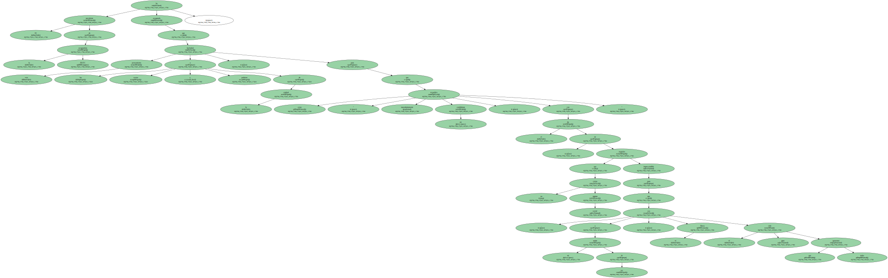
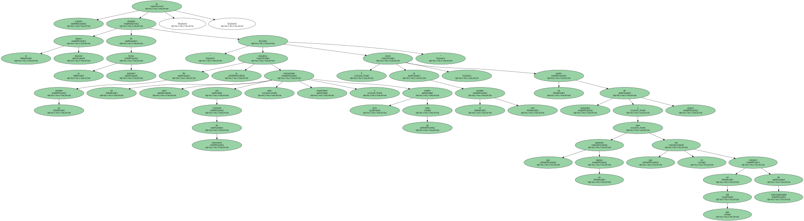
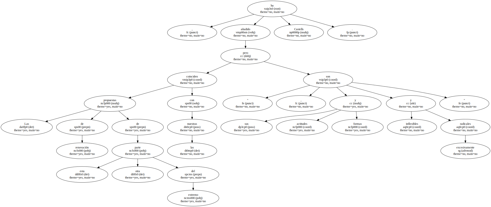

El empresario catalán Joan Castells , precandidato en las elecciones del FC Barcelona , sostiene que la división que existe actualmente en la masa social del club podría repararse si sale elegido él presidente , pero está convencido de que la cohesión no será posible si los vencedores en las urnas son sus oponentes Joan Gaspart o Lluís Bassat.

" Si estas elecciones las ganan Gaspart o Bassat , el Barca continuará dividido . Lo hemos dicho de todas las formas posibles y no nos cansaremos de repetirlo : los extremos se niegan " , ha comentado hoy Castells , en una nota de prensa remitida por su equipo de trabajo.

El presidente de la aseguradora FIATC ha asegurado que trasladará este pensamiento a los socios y peñistas de la entidad , para que estos " respalden mayoritariamente mi candidatura , con el fin de que no exista ruptura social , requisito imprescindible para que , a mi modo de ver , el Barca sea el gran club que todos queremos ".
Castells ha diseñado el espacio electoral de la siguiente forma : " En un extremo se encuentra un continuismo puro con voluntad de renovación pero insuficiente y poco creíble como tal . Y en el otro extremo , existe un puzzle de personajes y grupos que aparentan un equipo pero que no son más que un conjunto de individualidades ".
" Las propuestas de renovación de esta otra parte del extremo coinciden con las nuestras , pero sus actitudes y formas son inflexibles y excesivamente radicales " , ha añadido Castells.
